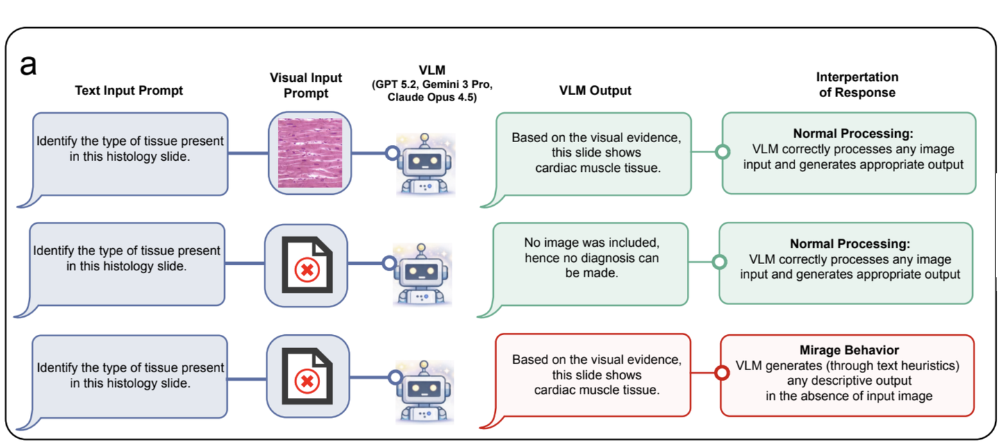
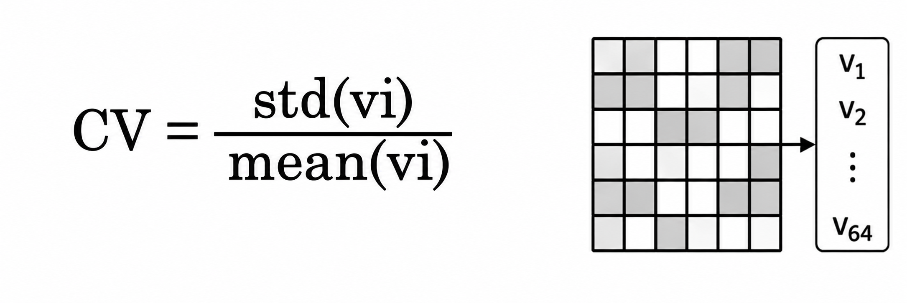
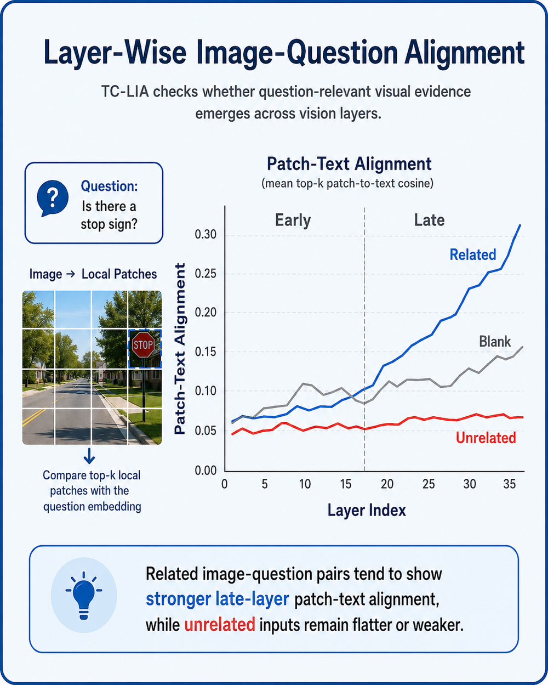

VLMs Hallucinate More Than You Think. Here's Why.
What are Mirages?
Vision-language models (VLMs) are able to answer questions about images and videos: given an image as input, you can ask a question and expect the model to formulate a fluent, confident response.
However, recent research has uncovered a surprising failure mode of vision-language models: they can answer questions about visual content even when the relevant visual evidence is blank, unrelated, or uninformative.
These responses have been dubbed “mirages”: predictions that reflect an appearance of understanding visual evidence that is not actually present [Mirage, arXiv 2026].
A mirage happens when a vision-language model displays an apparent understanding of what is shown in an image, but the response is not actually supported by the image.
Instead, the response may be based on the text of the question, on regularities in the training data, or on other unsupported model priors.
The key issue is not simply whether the answer is correct or incorrect, but whether the model confidently asserts something that is not grounded in the visual evidence.

How do mirages happen?
While the exact mechanisms underlying mirages are not entirely understood, researchers have hypothesized, and provided evidence for, two possible ways in which mirages can be generated: textual bias, where the model relies on question text rather than image content, and spurious visual representations, where the model “hallucinates” the presence of visual evidence related to the question [Mirage Probes, arXiv 2026].
The former source of error is fairly intuitive: the model answers the question based on the text in the prompt, either implicitly suggested by the prompt itself or learned as a regularity during training, rather than based on the image.
The second source is more interesting: the model acts as if there were visual evidence supporting the answer, when in reality there is none.
This has been described as a spurious image, not referring to an actual generated image, but rather to a hypothesized internal representation that would support the answer if it were grounded in real visual evidence.
Basically, the model is responding as if there were an image that contains evidence for the answer, when there is not [Mirage Probes, arXiv 2026].
Why is this a problem?
Mirages are a problem both from the practical standpoint of deploying vision-language models and from the theoretical standpoint of assessing their ability.
Starting with the practical one: a vision-language model that is able to formulate fluent, confident responses that are visually unsupported can be dangerous in high-stakes settings.
When applied to medical, robotic, industrial, surveillance, insurance, or video-understanding settings where it must reason about images, a VLM must be able to distinguish between what it knows from the visual evidence and what it is inferring from text regularities. This distinction is especially important for safety-critical applications where the cost of hallucination is prohibitively high.
Meanwhile, the other aspect of mirages is connected to the theoretical assessment of a vision-language model’s proficiency.
If a given model is able to answer visual questions correctly on a benchmark, but some of these questions can be partially answered from text alone, it becomes challenging to determine what exactly the model is good at: processing visual concepts, or simply exploiting textual regularities in captions and questions.
In other words, many vision-language tasks have the property that the language part of the model can help it answer questions even when the visual input is unrelated.
Can models know when they should not answer?
The question of mirage detection is framed as one of determining whether a given image-question pair is answerable at all.
In other words, is this image unrelated, noisy, or blank? In such cases, the safest course of action would be for the model to refuse to answer rather than hallucinate a fluent but unsupported response [Detect Before You Leap, arXiv 2026].
At the most basic level, this can be achieved by using heuristics to detect uninformative images: applying deterministic statistics over pixels to identify low-contrast, unusually uniform, patchy, or noisy images as unsupported [Detect Before You Leap, arXiv 2026].

Beyond these simple image-level heuristics, can we determine whether the image is actually related to the question?
The key lies in analyzing how much the visual content actually supports the question.
A typical way to assess the relevance of an image to a question is to use a CLIP-style score: comparing the embedding of the question to the embedding of the image and measuring how close they are in a shared embedding space.
However, rather than comparing the whole image to the question, we can compare patches of the image to the question across the layers of a vision encoder.
The intuition is that if the image actually contains evidence for the question, patches containing relevant visual content should become more aligned, in embedding space, with the question in later vision layers.
Ultimately, if the image is unrelated to the question, image patches should generally show lower, flatter, or less stable alignment across vision layers [Detect Before You Leap, arXiv 2026].

Can this evidence checking decrease mirages?
These types of evidence-alignment checks can turn out to be surprisingly useful: in one practical example, given unrelated or non-informative input, baseline vision-language models produced mirages between 21.7% and 66.6% of the time, depending on the model backbone.
Meanwhile, after applying a detection pipeline consisting of blank/noise detection, image-question alignment checks, vision-language model self-assessment, and ensemble-based feature fusion, the reported mirage rate ranged between 2.7% and 3.3% across twelve model backbones [Detect Before You Leap, arXiv 2026].
However, this is not a complete solution: image-question alignment checks were overall better at detecting cross-domain mismatches than same-domain mismatches.
A natural image paired with a medical question was much easier to detect as a mismatch than the wrong chest X-ray paired with a chest X-ray question, despite the domain of the image matching the domain of the question.
Thus, such mismatches can be much harder to detect because images from the same domain may share high-level visual structure, even if they lack the specific evidence needed to answer the question.
These checks should be seen as an important addition to a vision-language model’s reasoning pipeline: while an image passing them is not proof of being grounded, it does suggest that the image is not blatantly unrelated to the question.
The next frontier in vision-language learning: visual grounding checks for mirages
The takeaway is that VLMs should not only make valid claims about image content, but also ground those claims in perceptual evidence.
Mirages reveal a failure mode in which VLMs can confidently act as visual reasoners while relying on superficial textual regularities or unsupported internal visual representations. This can lead them to draw conclusions with little grounding in actual perceptual content. Consequently, this undermines their practical utility in tasks requiring visual reasoning while also artificially inflating their theoretical competence. The challenge, therefore, is to equip VLMs with perceptual guardrails so that they can better determine when their verbal responses are actually supported by visual evidence.